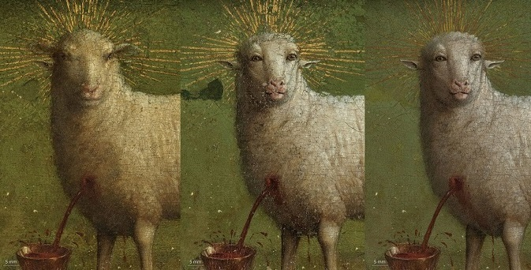
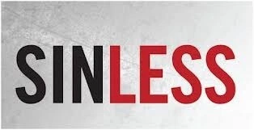
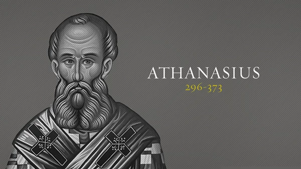
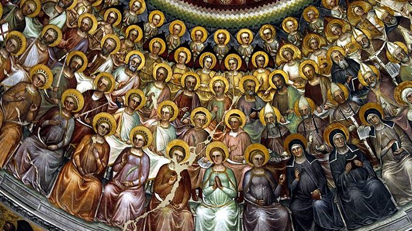
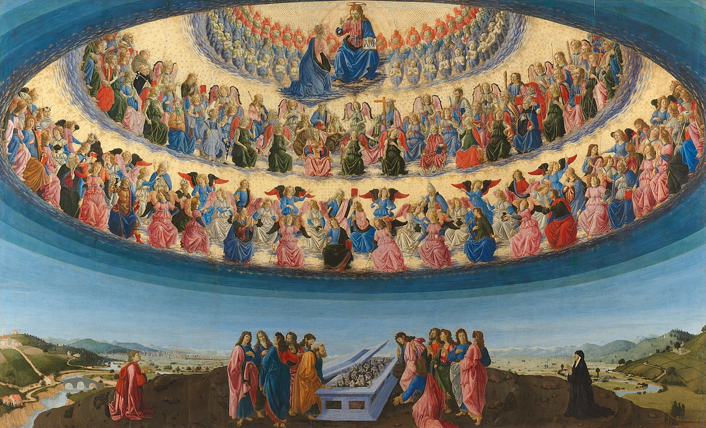

中保

Jan van Eyck: adoration of the lamb
讨论：找出这幅画修复前后的分别
复习 - 三种中保的形式
- 信使
- 辩护人
- 调解人
为何中保必须是上帝？
- 得以承受上帝对罪的愤怒
- 得以付上所有罪的工价
- 只有神才能战胜死亡
- 得以将生命赐给人
- 约翰福音 10：17-18，约翰福音 17：2
为何中保必须是人?
- 为了满足上帝的公义(加拉太4：4-5）
- 做人第二个约的头（林前15：22）
- 得以受苦和为人的罪死（腓利比2：7-8）
- 加拉太书4：4-5
中保必须是完全无罪
原因？


为罪人付上所有代价
为罪人赢得永生
希伯来书7：26，彼得前书2：22
为什么人不能自己作中保 （使徒行传4：12）

1. 所有人都在罪中全然败坏了
2. 没有罪人能承担上帝对罪的愤怒
为什么圣徒不能作我们的中保



1. 圣徒也是人，不能完全承担上帝对罪的愤怒
2. 无法在罪人心里创造新的灵命
3. 无法为他的工作赋予无限的价值
4. 他们也需要耶稣的救赎
为什么天使不能作我们的中保
1. 天使也是受造物，不能承担上帝的愤怒
2. 无法满足上帝的公义
3. 无法将公义应用到罪人心里
4. 无法为他的工作赋予无限的价值
5. 无法做人第二个约的头
唯一的中保:耶稣基督
他既是上帝，也是人
而且是全然无罪的人
提摩太前书2：5